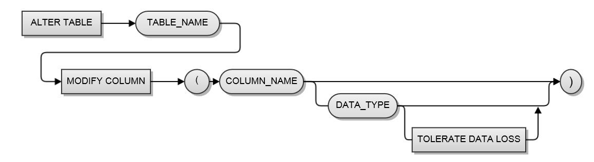

지원버전
ALTIBASE HDB 5.3.3 이상 버전 부터 ALTER TABLE ~ MODIFY COLUMN ~ 구문을 통해서 테이블의 칼럼타입과 칼럼의 length 를 변경할 수 있습니다.
구문
ALTER TABLE table_name MODIFY COLUMN ( column_name column_type(length) )

TOLERATE DATA LOSS 옵션
테이블의 데이터가 NULL 이 아닌 경우 변환타입에 따라서 자료 손실 (data loss ) 가 발생할 수 있습니다. 만일 이러한 자료 손실을 감수하고서라도 자료형을 변경하고자 하는 경우 TOLERATE DATA LOSS 옵션을 사용할 수 있습니다.
DATE 타입의 변환
DATE 타입 변경시에는 DEFAULT_DATE_FORMATE 프라퍼티에 따라 칼럼의 데이터가 변환됩니다.
주의점
column modify 명령은 잘못 사용할 경우 데이터 손실 ( data loss ) 및 대상 테이블의 데이터 량에 따라서 DB에 부하를 줄 수 있으므로 주의해서 사용해야 합니다.
칼럼 사이즈를 원래 크기 미만으로 줄이지 못합니다.
컬럼의 자료형을 변경하는 경우 자료형에 따라 데이터 손실이 일어날 수 있습니다. 만일 이러한 자료 손실을 감수하고 자료형을 변경하고자 하는 경우 TOLERATE DATA LOSS 옵션을 사용할 수 있습니다
- 이중화 대상 테이블을 대상으로 작업할 경우 이중화 환경에서의 DDL 작업절차에 따라서 작업을 해야 합니다. 알티베이스 이중화 대상 테이블에 대한 DDL 작업절차 를 참고하십시요.
- 대상 테이블의 row가 많은 경우 작업시간지연과 logs 영역의 사용량 증가 문제가 발생할 수 있습니다.
사용예시
<질의> 테이블 book 의 isbn 컬럼을 CHAR(20) 형으로, edition 컬럼을 BIGINT 형으로 변경하라.
iSQL> ALTER TABLE book MODIFY COLUMN (isbn CHAR(20), edition BIGINT); |
<실행 예> 아래는 위 질의에 대한 실행 예입니다.
iSQL> create table t1(c1 integer); |
참고
보다 자세한 사용법에 관한 내용은 SQL Reference Manual 에서 modify column 사용법을 참고하십시요.
{kind=link}